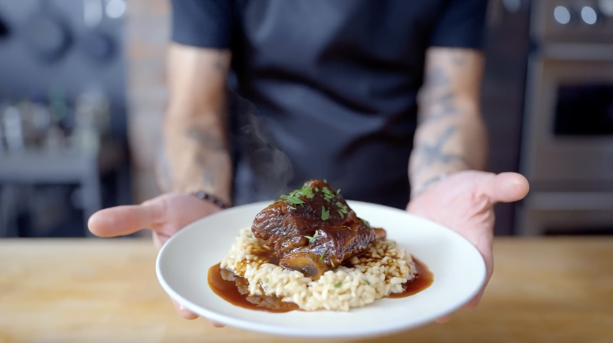

Cola-Braised short ribs from "The Bear"

Cola-Braised short ribs
This is a recipe for a cola-braised short ribs from Season 1 Episode 6 titled "Ceres".
This recipe consists of 2 components:
- Veal Stock
- Cola-Braised Short Ribs
Ingredients:
- two slices of bread
- three slices of ham
- two slices of tomato
- lettuce
- any type of condiment
Steps:
- Toast the two slices of bread
- Spread your choice on condiment on both bread
- Add some lettuce on each side of the bread
- Add tomato and the slices of ham of the bread
- Close the bread up and enjoy